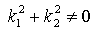
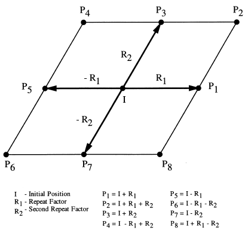

8.12.3.16 IfcFillAreaStyleTiles
The IfcFillAreaStyleTiles defines the filling of an
IfcAnnotationFillArea by recurring patterns of styled two dimensional
geometry, called a tile. The recurrence pattern is determined by two vectors,
that multiply the tile in regular form.
The two vectors act as a two dimensional repeat factor that determins eight
new positions for the tiles.
NOTE Definition according to ISO 10303-46:
The fill area style tiles defines a two dimensional tile to be used for the
filling of annotation fill areas or other closed regions. The content of a tile
is defined by the tile set, and the placement of each tile determined by the
filling pattern which indicates how to place tiles next to each other. Tiles or
parts of tiles outside of the annotation fill area or closed region shall be
clipped at the of the area or region.
I + k1* R1 +
k2* R2
k1,k2= -1,0,1 ,

Figure 336 shows the use of a vector for hatch line
distances
 |
|
Figure 336 — two vectors as two direction repeat
factor
|
NOTE Entity adapted from
fill_area_style_tiles defined in ISO10303-46
HISTORY New entity in IFC2x2.
IFC4 CHANGE TilingPattern
changed to list of two IfcVector, Tiles refer directly to
IfcStyledItem.
XSD Specification:
<xs:element name="IfcFillAreaStyleTiles" type="ifc:IfcFillAreaStyleTiles" substitutionGroup="ifc:IfcGeometricRepresentationItem" nillable="true"/>
<xs:complexType name="IfcFillAreaStyleTiles">
<xs:complexContent>
<xs:extension base="ifc:IfcGeometricRepresentationItem">
<xs:sequence>
<xs:element name="TilingPattern">
<xs:complexType>
<xs:sequence>
<xs:element ref="ifc:IfcVector" minOccurs="2" maxOccurs="2"/>
</xs:sequence>
<xs:attribute ref="ifc:itemType" fixed="ifc:IfcVector"/>
<xs:attribute ref="ifc:cType" fixed="list"/>
<xs:attribute ref="ifc:arraySize" use="optional"/>
</xs:complexType>
</xs:element>
<xs:element name="Tiles">
<xs:complexType>
<xs:sequence>
<xs:element ref="ifc:IfcStyledItem" maxOccurs="unbounded"/>
</xs:sequence>
<xs:attribute ref="ifc:itemType" fixed="ifc:IfcStyledItem"/>
<xs:attribute ref="ifc:cType" fixed="set"/>
<xs:attribute ref="ifc:arraySize" use="optional"/>
</xs:complexType>
</xs:element>
</xs:sequence>
<xs:attribute name="TilingScale" type="ifc:IfcPositiveRatioMeasure" use="optional"/>
</xs:extension>
</xs:complexContent>
</xs:complexType>
EXPRESS Specification:
|
ENTITY IfcFillAreaStyleTiles
|
 EXPRESS-G diagram
EXPRESS-G diagram
Attribute Definitions:
| TilingPattern | : |
A two direction repeat factor defining the shape and relative positioning of the tiles.
IFC4 CHANGE The attribute type has changed to directly reference two IfcVector's.
|
| Tiles | : |
A set of constituents of the tile being a styled item that is used as the annotation symbol for tiling the filled area.
IFC4 CHANGE The data type has been changed to IfcStyledItem.
NOTE Only IfcStyleItem's that refer to a compatible geometric representation item and presentation style shall be used.
|
| TilingScale | : | The scale factor applied to each tile as it is placed in the annotation fill area. |
Inheritance Graph:
|
ENTITY IfcFillAreaStyleTiles
|
 Link to this page
Link to this page